Completing a Symposium review
For reviewersOrganising the event?
Find out how to complete your symposium review in the Oxford Abstracts reviewing space.#
If you experience any issues or have any questions, please contact your event administrator in the first instance.
Once logged in, your Personal dashboard will show a list of the events with which your email is associated with. Click View
For each event, you will see how many reviews you have been assigned, how many have been completed, and a button that you need to click to start reviewing.
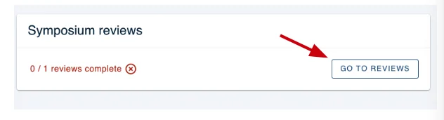
You will then be directed to the Review screen.
In the left-hand menu, you will see a list of the reviews that you have been assigned, represented by their symposium ID (1,2,3,4 etc).
You can click the blue arrow button to expand the menu to see more details or minimise it so only the symposium ID number appears.
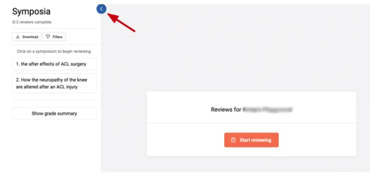
In the main part of the screen, you can see an orange button - Start reviewing.
Click on either the numbers in the left-hand menu or the orange button to begin reviewing.
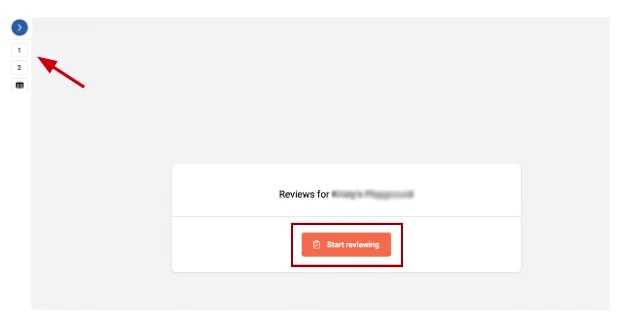
Next, you will be taken to the following screen, where you can choose which symposium to review by clicking the numbered section on the left-hand column.
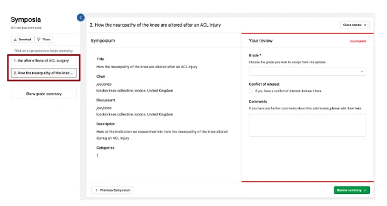
For quickness, you can find the symposium you are looking for by clicking the filter tab on the left-hand side and filling in the boxes.
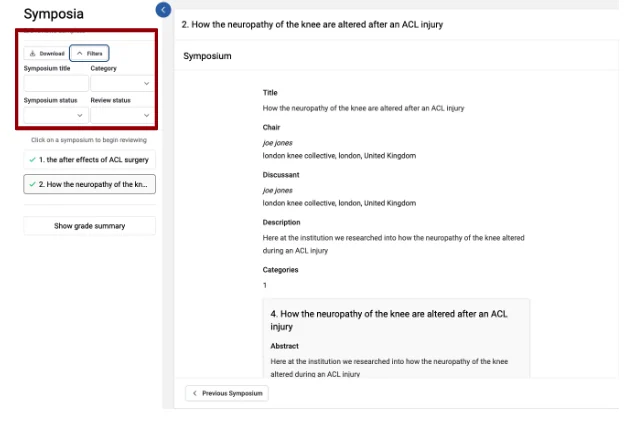
When you have chosen the selected symposium you wish to review, the information will appear to the right of the left-hand column.
Please note that admins will be able to choose what you can view, but for this example, you can see the following:
- Title
- Chair
- Discussant
- Description
- Category
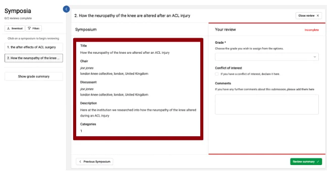
As you scroll down you will be able to view the abstract submission that corresponds to the symposium submission.
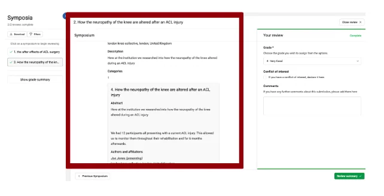
To the right of this information, admins will choose the questions for you to proceed to review a symposium.
For this example, you will be able to choose a Grade for the symposium, select if you have a conflict of interest, and add your comments.
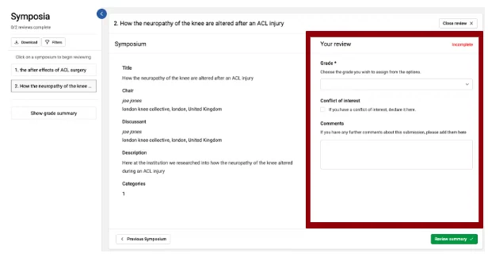
NB - there is no Save button as all changes are saved automatically.
Mandatory review questions are marked with an asterisk.
If you see Incomplete to the top right of the screen, this means the review section is incomplete.
Once all questions have been answered you will see this change to Complete and a green box will appear around your review.
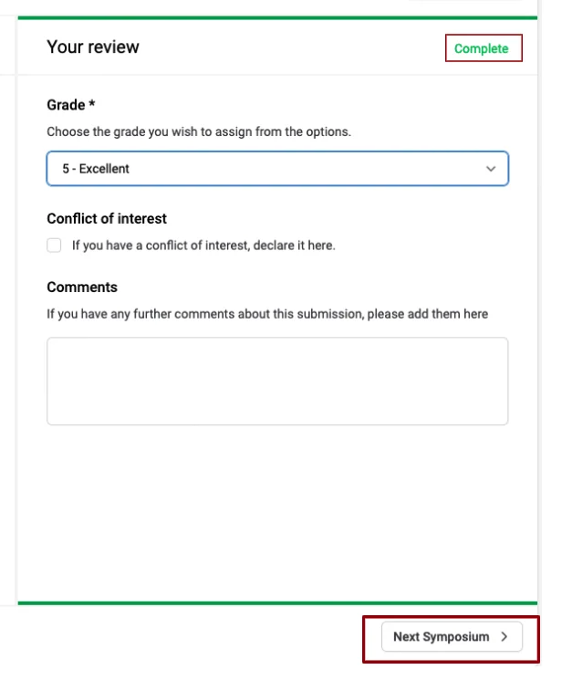
When you have completed a review, click the Next Symposium button at the bottom right of the screen (or Previous Symposium, if required).
If you have completed reviewing all your assigned Symposia then this button will say Review Summary instead.
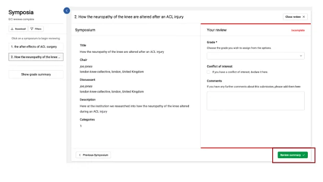
You will be taken to the following screen where you can view which reviews you have completed.
To do this you navigate to the left-hand column where you will see a green tick next to the number of the symposium you have reviewed.
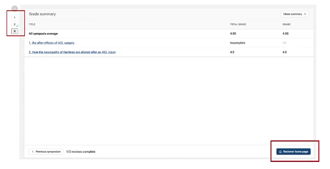
Click the Reviewer Home page found at the bottom right corner of the page to be taken back to your Symposia Reviewer Dashboard.
You may wish to download the symposiums you’re reviewing.
You can do this by clicking on the Download tab at the left-hand side. You can choose to download in either PDF or HTML format.
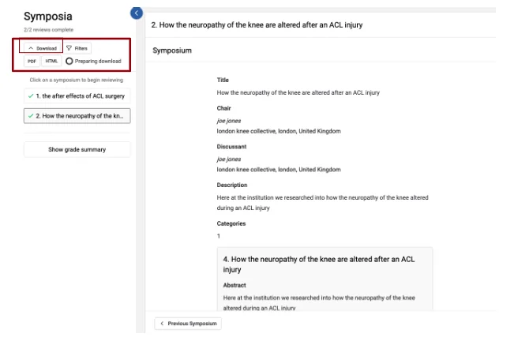
These will be downloaded to your desktop.
If you require further assistance please get in touch with our help desk via our Contact Form.
Common questions#
Reviewer FAQ (dissolved)#
This is one of our most frequently asked questions, and can be addressed following the guidance below.#
If, after clicking the link in the email notifying you of your assigned reviews, you see the message "You are not a reviewer" it is likely that you are logging in with the incorrect email address.
This can happen if you have previously used Oxford Abstract for submitting an abstract, or for a different event, for instance.
Take the steps below to ensure that you are logging in with the email address assigned to your reviews.
1) Check your notification email to confirm the email address associated with the account.
2) When you are logged in to Oxford Abstracts, go to the top right of your screen and click on your email address.
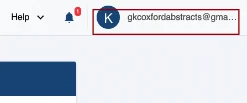
Then click My profile.
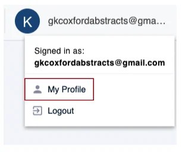
Then note the email address you are logged in with.
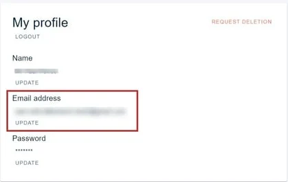
If they don't correlate, try one of the following:
1) Logging in with the email address in the reviewers notification email message.
2) Update your email address to the one in the notification email (if it is already registered, this will not be possible)
3) If they would like to use a different e-mail address than the one in the notification email, contact the conference administrator who can reassign the submissions.
If you still can't see your reviews, please contact your event administrator in the first instance.
If you should need further assistance please contact our support team - support@oxfordabstracts.com
Did this page solve it?
Thanks — this helps us fix it.